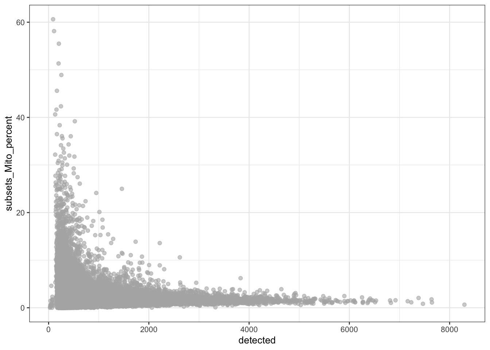
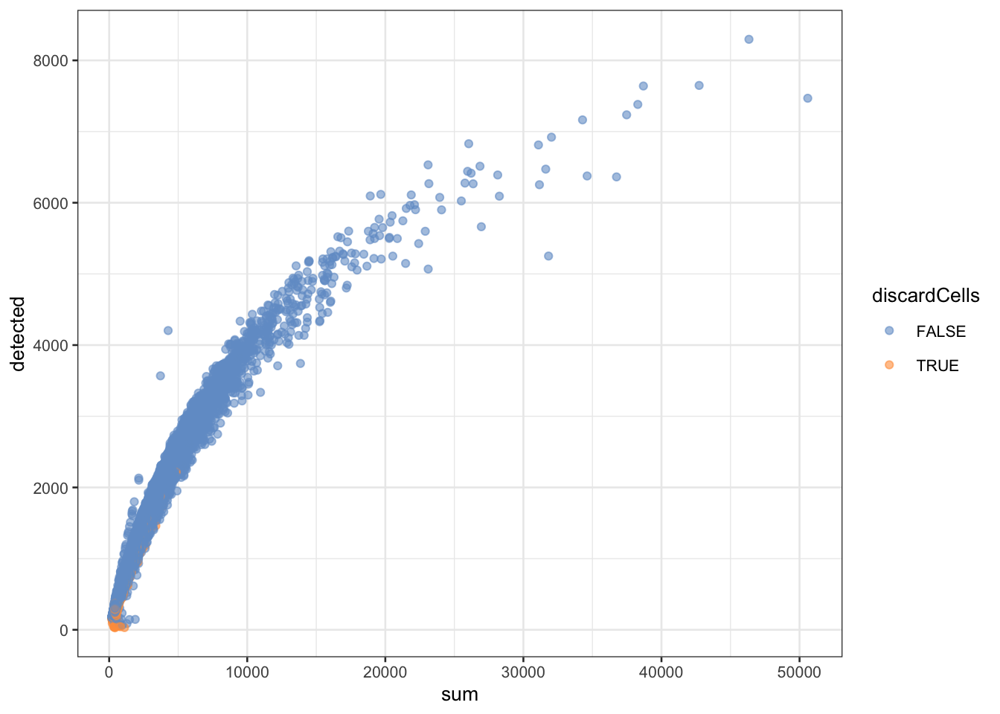
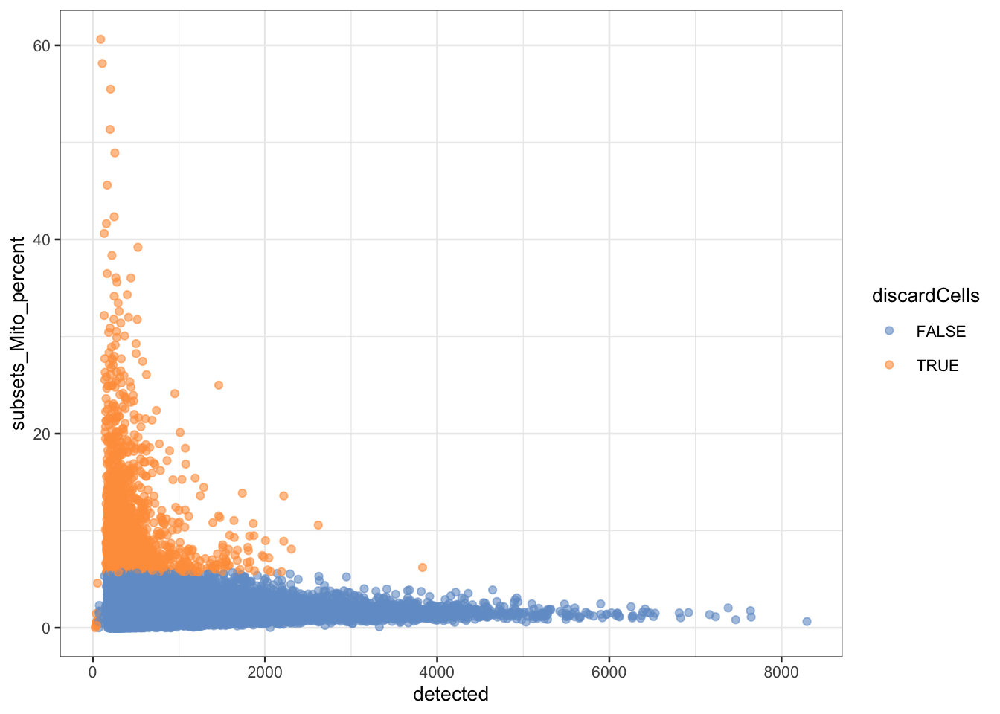
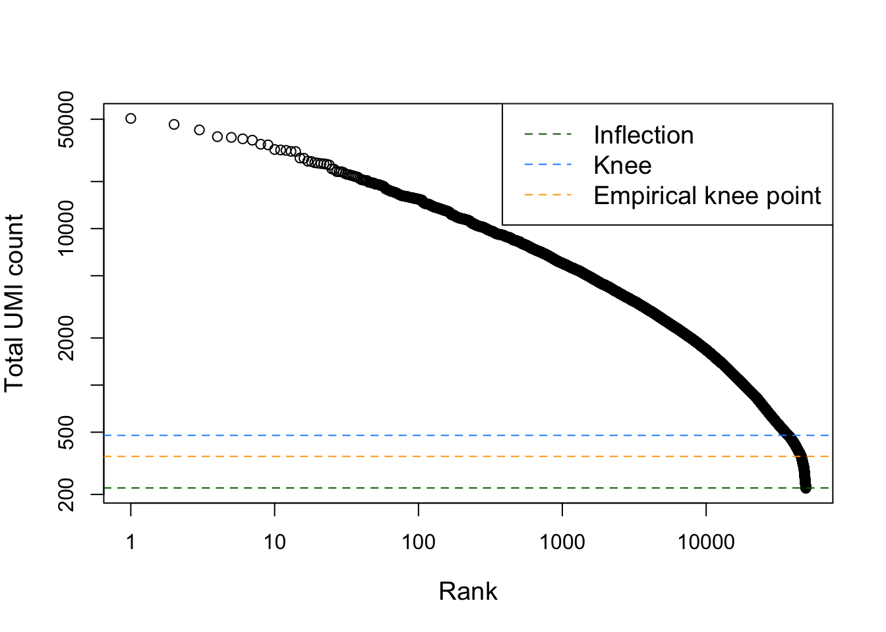
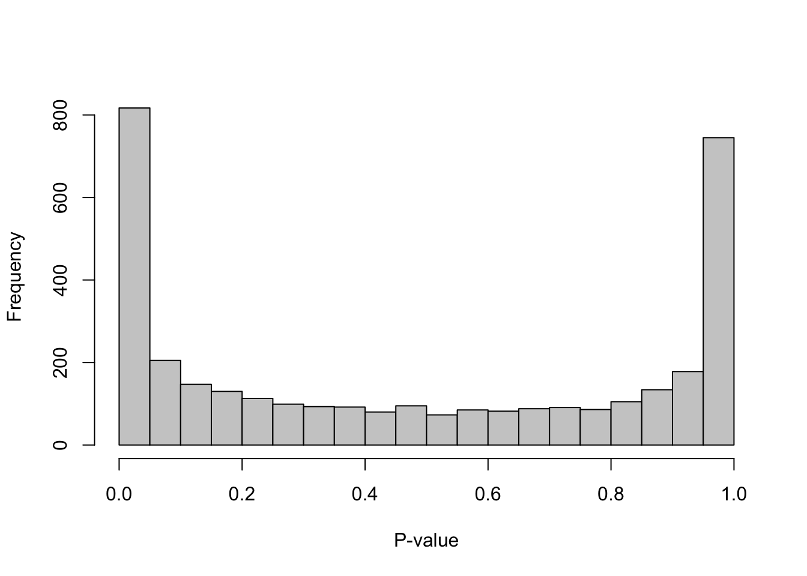
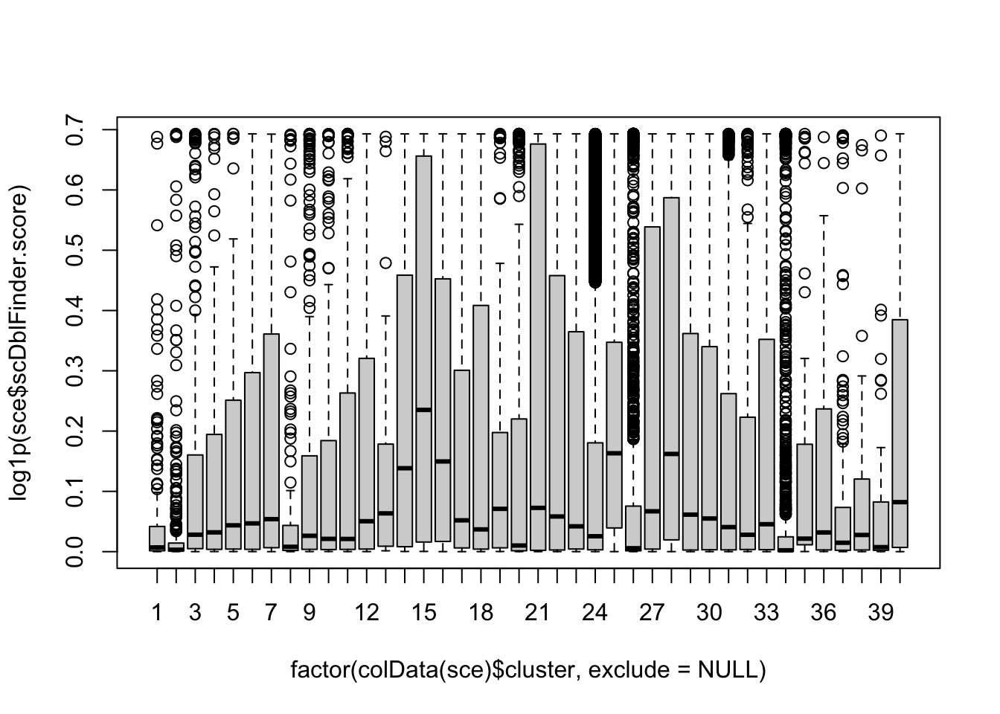
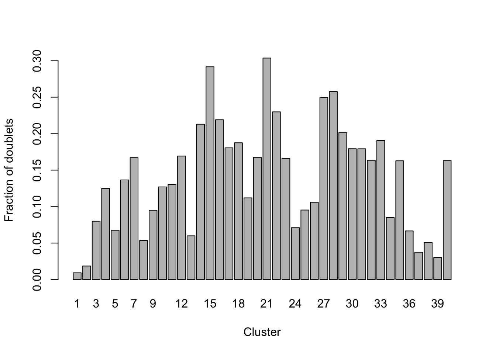
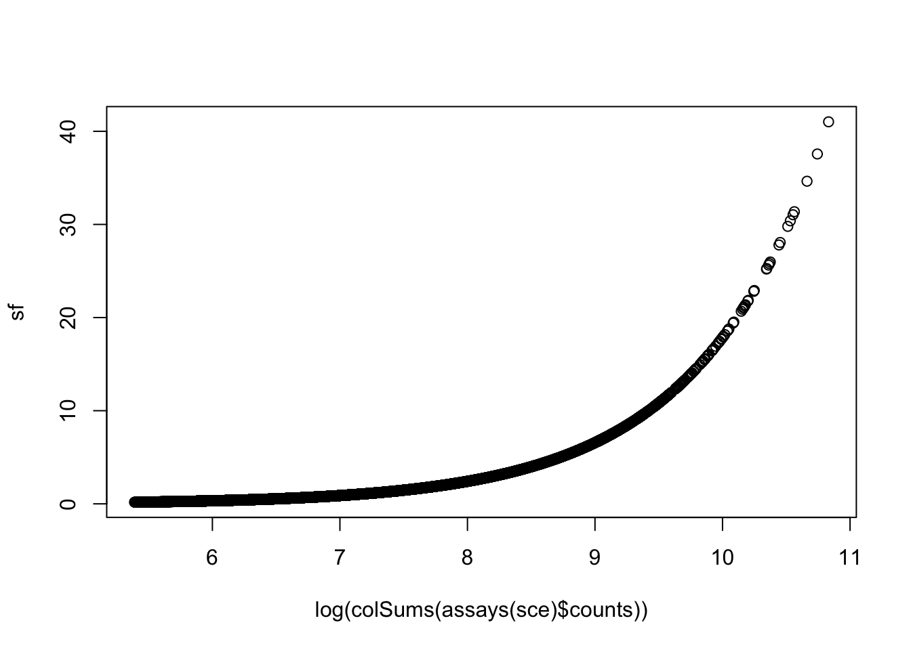
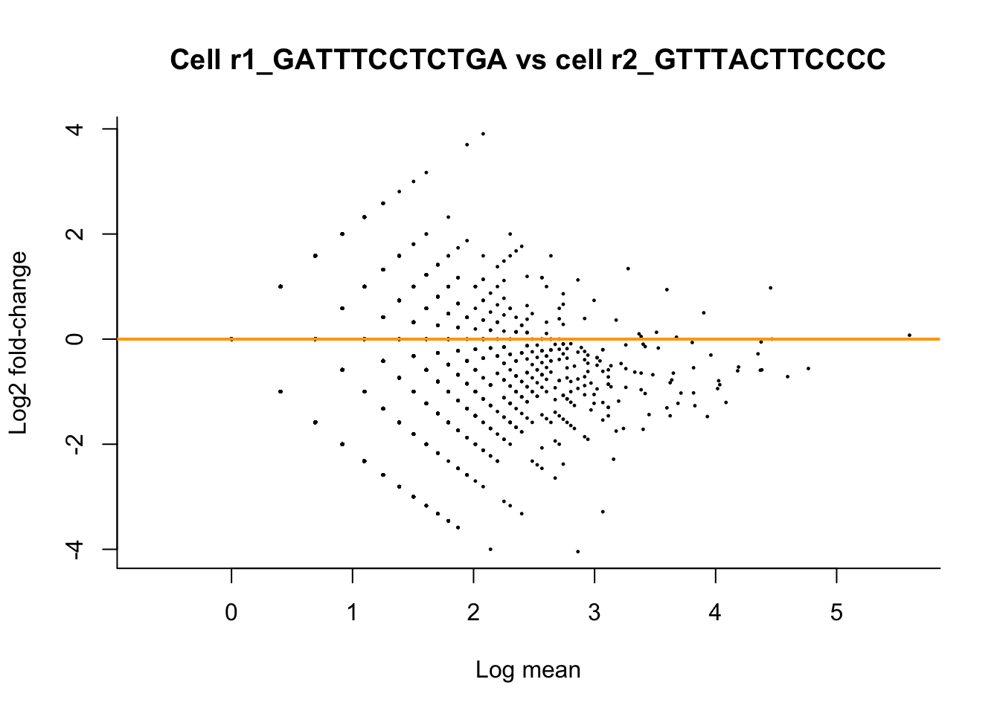
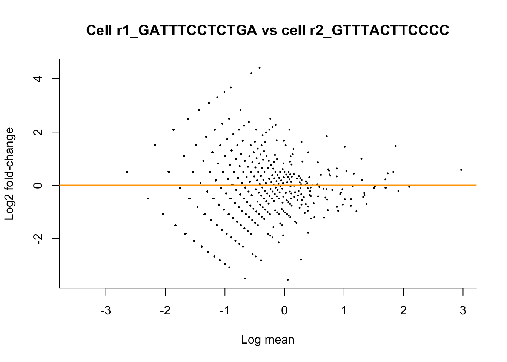

Preamble: installation of Bioconductor libraries
# install BiocManager package if not installed yet.
# BiocManager is the package installer for Bioconductor software.
if (!requireNamespace("BiocManager", quietly = TRUE))
install.packages("BiocManager")
# install packages if not yet installed.
pkgs <- c("SingleCellExperiment",
"ExperimentHub",
"edgeR",
"biomaRt",
"DropletUtils",
"scRNAseq",
"scater",
"scuttle",
"scran",
"scry",
"BiocSingular",
"scDblFinder",
"glmpca",
"PCAtools",
"Seurat")
notInstalled <- pkgs[!pkgs %in% installed.packages()[,1]]
if(length(notInstalled) > 0){
BiocManager::install(notInstalled)
}
The Macosko dataset
In this workshop session, we will analyze the single-cell RNA-seq dataset from the publication by Macosko et al., Cell 161, 1202–1214 from 2015 (link). This is the manuscript in which the droplet scRNA-seq technology Drop-seq was introduced. Six years after the original publication, drop-seq is still one of the most commonly adopted scRNA-seq protocols, as evidenced by the large number of citations for Macosko et al. (4.303 citations at November 3, 2021).
The basic idea behind the Drop-seq protocol can be taken from the graphical abstract of the publication.
knitr::include_graphics("macosko_graphicalAbstract.jpeg")
The success of Drop-seq can be explained by the following advantageous features:
The use of unique molecular identifiers (UMIs). By working with UMIs, one count corresponds to one observed mRNA molecule present in the cell. Thanks to the use of UMI barcodes, PCR artifacts are reduced.
Scalability: microfluidics technology allows for performing the library prep reactions inside nanodroplets, in which single cells may be contained. Library prep occurs across all droplets simultaneously.
Cost: the experiment costs around 6.5 cents (USD) per cell.
Speed: The very large dataset that we will be working with today was generated in an experiment that took only 4 days.
In this particular experiment, Macosko et al. sequenced 49,300 cells from the mouse retina, identifying 39 transcriptionally distinct cell populations. The experiment was performed in 7 batches.
Data availability
SRA
The Sequence Read Archive (SRA) is the largest publicly available repository of high-throughput sequencing data. The data are stored by the National Center for Biotechnology Information (NCBI) services and multiple cloud storage providers. From this website “raw” sequencing data can be retrieved. In practice, these are usually .sra files, which can be downloaded and converted into FASTQ files using functions from the sratoolkit software.
For our dataset, the FASTQ data can be retrieved from this link. The data are stored as one file per sequencing batch, with each file approximately 20Gb. As such, it will be unfeasible to download and process these FASTQ files in this practical session.
Instead, for demonstrative purposes, we have taken a subsample of the FASTQ file for the first sequencing batch for you to work with. On this subsample, we may perform all the tasks that we would have performed on the full dataset. The steps that are required for downloading and quantifying drop-seq data can be found in a Shell script on our companion GitHub repository.
GEO
The dataset from Macosko et al. was also uploaded by the authors on the Gene Expression Omnibus (GEO) platform under accession number GSE63472, from which raw and readily-processed data files may be retrieved, including:
GSE63472_RAW.tar, a 90.6Gb object that contains the “raw data” for the experiment. In the scRNA-seq context, FASTQ files are often considered the raw data format.
GSE63472_P14Retina_merged_digital_expression.txt.gz, a 50.7Mb matrix that stores the gene expression values for each cell. These values are integer counts, that did not undergo any type of preprocessing or normalization.
GSE63472_mm10_reference_metadata.tar.gz, a 862.9Mb compressed folder containing information on the reference genome to which the scRNA-seq reads were aligned (see theory slides).
GSE63472_P14Retina_logDGE.txt.gz, a 316.8Mb compressed text file, not clear what it contains (results from a differential gene expression analysis, but with log-transformation, so log-fold changes maybe?).
As such, by downloading GSE63472_P14Retina_merged_digital_expression.txt.gz, we avoid re-quantifying the data, i.e., the translation from reads from the FASTQ files into a gene-level expression values for each cell.
One issue that often arises from data downloaded from GEO, is that there is no strict requirements for which data should be included in the upload by the authors. As such, from my personal experience, it can often be the case that important information like metadata are missing, or the content of the submitted files is unclear. Even if all the required data are available, as is the case here, we would still need to piece all the information together from different files and file formats before we can use them.
ExperimentHub
The Bioconductor ExperimentHub web resource, which can be accessed using the ExperimentHub R package, provides a central location where curated data from experiments, publications or training courses can be accessed. While it contains far less datasets than the SRA or GEO (4965 records to date), these datasets all follow the tidy data format of Bioconductor. Note that the ExperimentHub contains several types of data, like bulk and single-cell transcriptomics data, microarrays and more.
The Macosko dataset is available from ExperimentHub and can be accessed as follows:
library(ExperimentHub)
edb <- ExperimentHub()
edb[grep("Macosko", edb$title)] # find accession number (can be inefficient)
## ExperimentHub with 2 records
## # snapshotDate(): 2021-10-19
## # $dataprovider: Steve McCarroll, GEO
## # $species: Mus musculus
## # $rdataclass: dgCMatrix, DataFrame
## # additional mcols(): taxonomyid, genome, description,
## # coordinate_1_based, maintainer, rdatadateadded, preparerclass, tags,
## # rdatapath, sourceurl, sourcetype
## # retrieve records with, e.g., 'object[["EH2690"]]'
##
## title
## EH2690 | Macosko retina counts
## EH2691 | Macosko retina colData
edb_counts <- edb[["EH2690"]]
edb_counts[1:5,1:5]
## 5 x 5 sparse Matrix of class "dgCMatrix"
## r1_GGCCGCAGTCCG r1_CTTGTGCGGGAA r1_GCGCAACTGCTC r1_GATTGGGAGGCA
## KITL . . 1 .
## TMTC3 3 . . .
## CEP290 1 3 . 2
## 4930430F08RIK 2 1 2 .
## 1700017N19RIK . . . .
## r1_CCTCCTAGTTGG
## KITL .
## TMTC3 2
## CEP290 1
## 4930430F08RIK 1
## 1700017N19RIK .
edb_coldata <- edb[["EH2691"]]
edb_coldata[1:5,]
## DataFrame with 5 rows and 2 columns
## cell.id cluster
## <character> <integer>
## 1 r1_GGCCGCAGTCCG 2
## 2 r1_CTTGTGCGGGAA 2
## 3 r1_GCGCAACTGCTC 2
## 4 r1_GATTGGGAGGCA 2
## 5 r1_CCTCCTAGTTGG NA
rm(edb, edb_counts, edb_coldata)
scRNASeq
In addition to ExperimentHub, Bioconductor provides the package scRNAseq. This package provides an even more user-friendly client to access (only) scRNA-seq datasets from the ExperimentHub web resource. Data retrieved using the scRNAseq package are stored as user-friendly SingleCellExperiment objects, with the expression data, gene-level information, cell-level information and experiment metadata all in place in one data object. The scRNA-seq package currently holds 61 datasets, including the data from Macosko et al.:
library(scRNAseq)
scRNAseq::MacoskoRetinaData()
## class: SingleCellExperiment
## dim: 24658 49300
## metadata(0):
## assays(1): counts
## rownames(24658): KITL TMTC3 ... 1110059M19RIK GM20861
## rowData names(0):
## colnames(49300): r1_GGCCGCAGTCCG r1_CTTGTGCGGGAA ... p1_TAACGCGCTCCT
## p1_ATTCTTGTTCTT
## colData names(2): cell.id cluster
## reducedDimNames(0):
## mainExpName: NULL
## altExpNames(0):
Import data
The scRNAseq package provides convenient access to several datasets. See the package Bioconductor page for more information.
# Code below might ask you to create an ExperimentHub directory.
# Type 'yes' and hit Enter, to allow this.
suppressPackageStartupMessages(library(scRNAseq))
sce <- MacoskoRetinaData()
## snapshotDate(): 2021-10-19
## see ?scRNAseq and browseVignettes('scRNAseq') for documentation
## loading from cache
## see ?scRNAseq and browseVignettes('scRNAseq') for documentation
## loading from cache
A SingleCellExperiment object
## class: SingleCellExperiment
## dim: 24658 49300
## metadata(0):
## assays(1): counts
## rownames(24658): KITL TMTC3 ... 1110059M19RIK GM20861
## rowData names(0):
## colnames(49300): r1_GGCCGCAGTCCG r1_CTTGTGCGGGAA ... p1_TAACGCGCTCCT
## p1_ATTCTTGTTCTT
## colData names(2): cell.id cluster
## reducedDimNames(0):
## mainExpName: NULL
## altExpNames(0):
Accessing data from a SingleCellExperiment object
Please see Figure 4.1 in OSCA for an overview of a SingleCellExperiment object.
# Data: assays
assays(sce)
## List of length 1
## names(1): counts
assays(sce)$counts[1:5, 1:5]
## 5 x 5 sparse Matrix of class "dgCMatrix"
## r1_GGCCGCAGTCCG r1_CTTGTGCGGGAA r1_GCGCAACTGCTC r1_GATTGGGAGGCA
## KITL . . 1 .
## TMTC3 3 . . .
## CEP290 1 3 . 2
## 4930430F08RIK 2 1 2 .
## 1700017N19RIK . . . .
## r1_CCTCCTAGTTGG
## KITL .
## TMTC3 2
## CEP290 1
## 4930430F08RIK 1
## 1700017N19RIK .
# Feature metadata: rowData
rowData(sce) # empty for now
## DataFrame with 24658 rows and 0 columns
# Cell metadata: colData
colData(sce)
## DataFrame with 49300 rows and 2 columns
## cell.id cluster
## <character> <integer>
## r1_GGCCGCAGTCCG r1_GGCCGCAGTCCG 2
## r1_CTTGTGCGGGAA r1_CTTGTGCGGGAA 2
## r1_GCGCAACTGCTC r1_GCGCAACTGCTC 2
## r1_GATTGGGAGGCA r1_GATTGGGAGGCA 2
## r1_CCTCCTAGTTGG r1_CCTCCTAGTTGG NA
## ... ... ...
## p1_TCAAAAGCCGGG p1_TCAAAAGCCGGG 24
## p1_ATTAAGTTCCAA p1_ATTAAGTTCCAA 34
## p1_CTGTCTGAGACC p1_CTGTCTGAGACC 2
## p1_TAACGCGCTCCT p1_TAACGCGCTCCT 24
## p1_ATTCTTGTTCTT p1_ATTCTTGTTCTT 24
# Reduced dimensions: reducedDims
reducedDims(sce) # empty for now
## List of length 0
## names(0):
Creating a new SingleCellExperiment object
sceNew <- SingleCellExperiment(assays = list(counts = assays(sce)$counts))
sceNew
## class: SingleCellExperiment
## dim: 24658 49300
## metadata(0):
## assays(1): counts
## rownames(24658): KITL TMTC3 ... 1110059M19RIK GM20861
## rowData names(0):
## colnames(49300): r1_GGCCGCAGTCCG r1_CTTGTGCGGGAA ... p1_TAACGCGCTCCT
## p1_ATTCTTGTTCTT
## colData names(0):
## reducedDimNames(0):
## mainExpName: NULL
## altExpNames(0):
Obtaining and including rowData
The rowData slot of a SingleCellExperiment object allows for storing information on the features, i.e. the genes, in a dataset. In our object, the rowData slot is empty.
## DataFrame with 24658 rows and 0 columns
As such, the only information we have on the genes are their names, which can be retrieved as the rownames of the expression matrix.
## [1] "KITL" "TMTC3" "CEP290" "4930430F08RIK"
## [5] "1700017N19RIK" "MGAT4C"
These are the gene names (symbols). Note that it may be useful to include additional information in the rowData slot. For instance, we may want to store:
- Unambiguous gene identifiers (e.g. from ENSEMBL)
- On which chromosome the gene is located
- Gene length (genomic start position and end position)
- Others…
library("biomaRt")
ensembl75 <- useEnsembl(biomart = 'genes',
dataset = 'mmusculus_gene_ensembl',
version = 75)
head(listAttributes(ensembl75)) # potential info to extract
geneInfo <- getBM(attributes = c("ensembl_gene_id", # ENSEMBL unambiguous identifier
"mgi_symbol", # Gene symbol (to link with SCE rownames),
"chromosome_name", # On which chromosome
"start_position", # Start position
"end_position"),# End position
mart = ensembl75)
head(geneInfo)
geneInfo$mgi_symbol_upper <- toupper(geneInfo$mgi_symbol)
# match between gene info and rownames
sum(rownames(sce) %in% geneInfo$mgi_symbol_upper)
## [1] 24360
sum(!rownames(sce) %in% geneInfo$mgi_symbol_upper) # lost in conversion :(
## [1] 298
rowData(sce) <- geneInfo[match(rownames(sce),geneInfo$mgi_symbol_upper),]
## DataFrame with 6 rows and 6 columns
## ensembl_gene_id mgi_symbol chromosome_name start_position
## <character> <character> <character> <integer>
## KITL ENSMUSG00000019966 Kitl 10 100015630
## TMTC3 ENSMUSG00000036676 Tmtc3 10 100443902
## CEP290 ENSMUSG00000019971 Cep290 10 100488289
## 4930430F08RIK ENSMUSG00000046567 4930430F08Rik 10 100572274
## 1700017N19RIK ENSMUSG00000056912 1700017N19Rik 10 100592386
## MGAT4C ENSMUSG00000019888 Mgat4c 10 101681487
## end_position mgi_symbol_upper
## <integer> <character>
## KITL 100100413 KITL
## TMTC3 100487350 TMTC3
## CEP290 100573655 CEP290
## 4930430F08RIK 100589259 4930430F08RIK
## 1700017N19RIK 100618391 1700017N19RIK
## MGAT4C 102391469 MGAT4C
Filtering non-informative genes
## Loading required package: limma
##
## Attaching package: 'limma'
## The following object is masked from 'package:BiocGenerics':
##
## plotMA
##
## Attaching package: 'edgeR'
## The following object is masked from 'package:SingleCellExperiment':
##
## cpm
# A very simple strategy: remove all genes that are expressed in less than 10
# out of 49300 cells -> note that this a very lenient filtering criterium
keep <- rowSums(assays(sce)$counts > 0) > 10
table(keep)
## keep
## FALSE TRUE
## 6771 17887
Note that dedicated functions for filtering out lowly expressed genes exist. One such function is the filterByExpr function of the edgeR R package. In brief, the strategy keeps genes that have at least “min.count” reads in a worthwhile number samples.
More precisely, the filtering keeps genes that have count-per-million (CPM) above k in n samples.
k is determined by the min.count argument to the function, and by the sample library sizes.
n is determined by the design matrix. n can be seen as the smallest group sample size. A group of samples/cells can be defined as cells that are more similar to one another, e.g., from the same sequencing batch, the same patient…. Here we could also use the cluster assignment (cell type) for each cell as the grouping variable; note however, that this usually is not available until a later stage in the analysis pipeline (i.e., after dimension reduction and clustering, topics we will cover next session.)
If all the group sizes are larger than the large.n argument of the filterByExpr function, which defaults to 10, then n will be taken as min.prop* the the number of samples/cells in the smallest group.
Note that all the group sizes will often be larger than the large.n in case of single-cell data.
# Slow (more than 1min) -> do not run
# keep2 <- filterByExpr(sce,
# group = sce$cluster,
# min.count = 1,
# min.total.count = 15,
# min.prop = 0.2)
# table(keep2)
Quality control
In quality control (QC), we check the quality of our dataset. In particular, we investigate undesirable oddities, such as low-quality cells, empty droplets or doublets.
Identifying and removing low-quality cells
There are several distinguishing features of low-quality cells that can be used in order to identify them. As described in the OSCA book book):
The library size is defined as the total sum of counts across all relevant features for each cell. Here, we will consider the relevant features to be the endogenous genes. Cells with small library sizes are of low quality as the RNA has been lost at some point during library preparation, either due to cell lysis or inefficient cDNA capture and amplification.
The number of expressed features in each cell is defined as the number of endogenous genes with non-zero counts for that cell. Any cell with very few expressed genes is likely to be of poor quality as the diverse transcript population has not been successfully captured.
We sometimes have spike-in (ERCC) transcripts available. The proportion of reads mapped to spike-in transcripts is calculated relative to the total count across all features (including spike-ins) for each cell. As the same amount of spike-in RNA should have been added to each cell, any enrichment in spike-in counts is symptomatic of loss of endogenous RNA.
In the absence of spike-in transcripts, the proportion of reads mapped to genes in the mitochondrial genome can be used. High proportions are indicative of poor-quality cells (Islam et al. 2014; Ilicic et al. 2016), presumably because of loss of cytoplasmic RNA from perforated cells. The reasoning is that, in the presence of modest damage, the holes in the cell membrane permit efflux of individual transcript molecules but are too small to allow mitochondria to escape, leading to a relative enrichment of mitochondrial transcripts. For single-nuclei RNA-seq experiments, high proportions are also useful as they can mark cells where the cytoplasm has not been successfully stripped.
Calculate QC variables
This function calculates useful QC metrics for identification and removal of potentially problematic cells. Default per-cell metrics are the sum of counts (i.e., the library size) and the number of detected features. The percentage of counts in the top features also provides a measure of library complexity.
If subsets is specified, these statistics are also computed for each subset of features. This is useful for investigating gene sets of interest, e.g., mitochondrial genes.
library(scater)
# check ERCC spike-in transcripts
sum(grepl("^ERCC-", rownames(sce))) # no spike-in transcripts available
## [1] 0
# check mitochondrial genes
sum(rowData(sce)$chromosome_name=="MT",na.rm = TRUE) # 28 mitochondrial genes
## [1] 28
sum(grepl("^MT-", rownames(sce))) # alternatively
## [1] 28
is.mito <- grepl("^MT-", rownames(sce))
## calculate QC metrics
df <- perCellQCMetrics(sce, subsets=list(Mito=is.mito))
head(df)
## DataFrame with 6 rows and 6 columns
## sum detected subsets_Mito_sum subsets_Mito_detected
## <numeric> <integer> <numeric> <integer>
## r1_GGCCGCAGTCCG 37478 7235 427 14
## r1_CTTGTGCGGGAA 32034 6921 503 15
## r1_GCGCAACTGCTC 28140 6390 460 13
## r1_GATTGGGAGGCA 20352 5727 326 11
## r1_CCTCCTAGTTGG 19550 5769 264 9
## r1_AGTCAAGCCCTC 19176 5217 253 12
## subsets_Mito_percent total
## <numeric> <numeric>
## r1_GGCCGCAGTCCG 1.13934 37478
## r1_CTTGTGCGGGAA 1.57021 32034
## r1_GCGCAACTGCTC 1.63468 28140
## r1_GATTGGGAGGCA 1.60181 20352
## r1_CCTCCTAGTTGG 1.35038 19550
## r1_AGTCAAGCCCTC 1.31936 19176
# add QC variables to sce object
colData(sce) <- cbind(colData(sce), df)
# the QC variables have now been added to the colData of our SCE object.
head(colData(sce))
## DataFrame with 6 rows and 8 columns
## cell.id cluster sum detected subsets_Mito_sum
## <character> <integer> <numeric> <integer> <numeric>
## r1_GGCCGCAGTCCG r1_GGCCGCAGTCCG 2 37478 7235 427
## r1_CTTGTGCGGGAA r1_CTTGTGCGGGAA 2 32034 6921 503
## r1_GCGCAACTGCTC r1_GCGCAACTGCTC 2 28140 6390 460
## r1_GATTGGGAGGCA r1_GATTGGGAGGCA 2 20352 5727 326
## r1_CCTCCTAGTTGG r1_CCTCCTAGTTGG NA 19550 5769 264
## r1_AGTCAAGCCCTC r1_AGTCAAGCCCTC NA 19176 5217 253
## subsets_Mito_detected subsets_Mito_percent total
## <integer> <numeric> <numeric>
## r1_GGCCGCAGTCCG 14 1.13934 37478
## r1_CTTGTGCGGGAA 15 1.57021 32034
## r1_GCGCAACTGCTC 13 1.63468 28140
## r1_GATTGGGAGGCA 11 1.60181 20352
## r1_CCTCCTAGTTGG 9 1.35038 19550
## r1_AGTCAAGCCCTC 12 1.31936 19176
Exploratory data analysis
In the figure below, we see that several cells have a very low number of expressed genes, and where most of the molecules are derived from mitochondrial genes. This indicates likely damaged cells, presumably because of loss of cytoplasmic RNA from perforated cells, so we should remove these for the downstream analysis.
# Number of genes vs library size
plotColData(sce, x = "sum", y="detected", colour_by="cluster")

# Mitochondrial genes
plotColData(sce, x = "detected", y="subsets_Mito_percent")

QC using adaptive thresholds
Below, we remove cells that are outlying with respect to
- A low sequencing depth (number of UMIs);
- A low number of genes detected;
- A high percentage of reads from mitochondrial genes.
Here we will remove cells for QC based on adaptive thresholds related to the three points from above. Adaptive trhesholds are used as opposed to fixed thresholds.
With fixed thresholds, we use fixed cut-off values for each cell to pass QC, e.g., we might consider cells to be low quality if they have library sizes below 100,000 reads; express fewer than 5,000 genes; have spike-in proportions above 10%; or have mitochondrial proportions above 10%.
With adaptive thresholds, we assume that most of the dataset consists of high-quality cells. We then identify cells that are outliers for the various QC metrics, based on the median absolute deviation (MAD) from the median value of each metric across all cells. By default, we consider a value to be anoutlier if it is more than 3 MADs from the median in the “problematic” direction. This is loosely motivated by the fact that such a filter will retain 99% of non-outlier values that follow a normal distribution. We demonstrate adopting adaptive thresholds on the Macosko dataset:
lowLib <- isOutlier(df$sum, type="lower", log=TRUE)
lowFeatures <- isOutlier(df$detected, type="lower", log=TRUE)
highMito <- isOutlier(df$subsets_Mito_percent, type="higher")
table(lowLib)
## lowLib
## FALSE
## 49300
## lowFeatures
## FALSE TRUE
## 49287 13
## highMito
## FALSE TRUE
## 45890 3410
discardCells <- (lowLib | lowFeatures | highMito)
table(discardCells)
## discardCells
## FALSE TRUE
## 45877 3423
colData(sce)$discardCells <- discardCells
# visualize cells to be removed
plotColData(sce, x = "sum", y="detected", colour_by="discardCells")

plotColData(sce, x = "detected", y="subsets_Mito_percent", colour_by = "discardCells")

We removed a total of \(3423\) cells, most of which because of an outlyingly high percentage of reads from mitochondrial genes.
Identifying and removing empty droplets
Note that the removal of cells with low sequencing depth using the adaptive threshold procedure above is a way of removing empty droplets. Other approaches are possible, e.g., removing cells by statistical testing using emtpyDrops. This does require us to specify a lower bound on the total number of UMIs, below which all cells are considered to correspond to empty droplets. This lower bound may not be trivial to derive, but the barcodeRanks function can be useful to identify an elbow/knee point.
In brief, the steps taken by the emtpyDrops function can be summarized as follows:
Define threshold T of total UMI counts (e.g. with the help of the barcodeRanks function), below which cells may be considered to be from empty droplets. Call this set of cells E.
Define \(A_g\) as the total gene expression across all cells in E.
Define \(pi_g\) as the relative contribution of gene g to the ambient profile.
Calculate p-value for each cell to have a transcriptional profile similar to the ambient solution. Intuitively, a p-value below the requested alpha level would correspond to a cell for which the observed count profile strongly deviates from the count profile observed in the cells with a library size below threshold T, i.e., a non-empty droplet.
library(DropletUtils)
bcrank <- barcodeRanks(counts(sce))
# Only showing unique points for plotting speed. Duplicated ranks are a
# consequence of ties in the ranks, i.e., when cells have an equal library size.
sum(duplicated(bcrank$rank))
## [1] 43864
uniq <- !duplicated(bcrank$rank)
plot(bcrank$rank[uniq], bcrank$total[uniq], log="xy",
xlab="Rank", ylab="Total UMI count", cex.lab=1.2)
abline(h=metadata(bcrank)$inflection, col="darkgreen", lty=2)
abline(h=metadata(bcrank)$knee, col="dodgerblue", lty=2)
abline(h=350, col="orange", lty=2) # picked visually myself
legend("topright",
legend=c("Inflection", "Knee", "Empirical knee point"),
col=c("darkgreen", "dodgerblue", "orange"),
lty=2,
cex=1.2)

set.seed(100)
limit <- 350
all.out <- emptyDrops(counts(sce), lower=limit, test.ambient=TRUE)
# p-values for cells with total UMI count under the lower bound.
hist(all.out$PValue[all.out$Total <= limit & all.out$Total > 0],
xlab="P-value", main="", col="grey80", breaks=20)

# but note that it would remove a very high number of cells
length(which(all.out$FDR <= 0.01)) # retained
## [1] 27230
# so we stick to the more lenient adaptive filtering strategy
# remove cells identified using adaptive thresholds
sce <- sce[, !colData(sce)$discardCells]
Identifying and removing doublets
We will use scDblFinder to detect doublet cells.
As discussed in the theory session of last week, the steps taken by scDblFinder can be summarized as follows:
Perform principal components analysis (PCA) on log-normalized expression counts. This allows for projecting each cell in the dataset into a 2D space (for more details on PCA, see next weeks session).
Randomly select two cells, sum their counts and normalize, and project into PCA space from step 1. In other words, artificially generate doublets and see where they are located in the 2D space.
Repeat step 2 many times (generate many artificial doublets).
Generate neighbor network in the 2D space. The network is then used to estimate a number of characteristics for each cell, in particular the proportion f artificial doublets among the nearest neighbors.
Use this information, along with other predictors, to train a classifier (gradient boosted tree) that allows for distinguishing doublets from singlets.
Note: only classifies for identifying doublets for which the two cells are from different cell type clusters.
## perform doublet detection
library(scDblFinder)
set.seed(211103)
sampleID <- unlist(lapply(strsplit(colData(sce)$cell.id, split="_"), "[[", 1))
table(sampleID)
## sampleID
## p1 r1 r2 r3 r4 r5 r6
## 3942 5953 8414 5319 7015 7487 7747
sce <- scDblFinder(sce,
returnType="table",
samples = factor(sampleID))
table(sce$scDblFinder.class)
##
## singlet doublet
## 41220 4657
## visualize these scores
## explore doublet score wrt original cluster labels
boxplot(log1p(sce$scDblFinder.score) ~ factor(colData(sce)$cluster, exclude=NULL))

tab <- table(sce$scDblFinder.class, sce$cluster,
exclude=NULL)
tab
##
## 1 2 3 4 5 6 7 8 9 10 11
## singlet 213 370 253 63 69 177 264 141 305 165 180
## doublet 2 7 22 9 5 28 53 8 32 24 27
##
## 12 13 14 15 16 17 18 19 20 21 22
## singlet 211 47 85 51 196 304 65 111 318 172 201
## doublet 43 3 23 21 55 67 15 14 64 75 60
##
## 23 24 25 26 27 28 29 30 31 32 33
## singlet 216 25026 1604 1932 472 357 464 517 412 266 658
## doublet 43 1917 169 229 157 124 117 113 90 52 155
##
## 34 35 36 37 38 39 <NA>
## singlet 1431 36 42 231 56 64 3475
## doublet 133 7 3 9 3 2 677
##
## 1 2 3 4 5
## singlet 0.990697674 0.981432361 0.920000000 0.875000000 0.932432432
## doublet 0.009302326 0.018567639 0.080000000 0.125000000 0.067567568
##
## 6 7 8 9 10
## singlet 0.863414634 0.832807571 0.946308725 0.905044510 0.873015873
## doublet 0.136585366 0.167192429 0.053691275 0.094955490 0.126984127
##
## 11 12 13 14 15
## singlet 0.869565217 0.830708661 0.940000000 0.787037037 0.708333333
## doublet 0.130434783 0.169291339 0.060000000 0.212962963 0.291666667
##
## 16 17 18 19 20
## singlet 0.780876494 0.819407008 0.812500000 0.888000000 0.832460733
## doublet 0.219123506 0.180592992 0.187500000 0.112000000 0.167539267
##
## 21 22 23 24 25
## singlet 0.696356275 0.770114943 0.833976834 0.928849794 0.904681331
## doublet 0.303643725 0.229885057 0.166023166 0.071150206 0.095318669
##
## 26 27 28 29 30
## singlet 0.894030541 0.750397456 0.742203742 0.798623064 0.820634921
## doublet 0.105969459 0.249602544 0.257796258 0.201376936 0.179365079
##
## 31 32 33 34 35
## singlet 0.820717131 0.836477987 0.809348093 0.914961637 0.837209302
## doublet 0.179282869 0.163522013 0.190651907 0.085038363 0.162790698
##
## 36 37 38 39 <NA>
## singlet 0.933333333 0.962500000 0.949152542 0.969696970 0.836946050
## doublet 0.066666667 0.037500000 0.050847458 0.030303030 0.163053950
barplot(t(t(tab) / colSums(tab))[2,],
xlab = "Cluster", ylab = "Fraction of doublets")

range(sce$scDblFinder.score[sce$scDblFinder.class == "doublet" & sampleID == "r1"])
## [1] 0.6899794 0.9999367
range(sce$scDblFinder.score[sce$scDblFinder.class == "singlet" & sampleID == "r1"])
## [1] 2.926333e-05 6.884753e-01
# remove doublets
sce <- sce[,!sce$scDblFinder.class == "doublet"]
Normalization
Normalization aims to remove technical effects such as sequencing depth so that comparisons between cells are not confounded by them. The most commonly used normalization methods methods use scaling, where a scaling factor (also called size factor, normalization factor) is estimated for each cell. These scaling factors (e.g., the effective library size) can be included as an offset to downstream modeling procedures. This effectively allows for performing inference on the relative abundance of a gene in a cell, after accounting for library size and RNA composition differences between cells, which is much more relevant than comparing raw counts
Note that we always prefer the use of offsets over transformation of the data. In brief, such transformation would distort the mean-variance relationship in the data. For more details, we refer to the document that was discussed in theory session of last week (link)
For normalization, the size factors \(s_i\) computed here are simply scaled library sizes: \[ N_i = \sum_g Y_{gi} \] \[ s_i = N_i / \bar{N}_i \]
sce <- logNormCounts(sce)
# note we also returned log counts: see the additional logcounts assay.
sce
## class: SingleCellExperiment
## dim: 17887 41220
## metadata(0):
## assays(2): counts logcounts
## rownames(17887): KITL TMTC3 ... GM16012 GM21464
## rowData names(6): ensembl_gene_id mgi_symbol ... end_position
## mgi_symbol_upper
## colnames(41220): r1_GGCCGCAGTCCG r1_CTTGTGCGGGAA ... p1_TAACGCGCTCCT
## p1_ATTCTTGTTCTT
## colData names(15): cell.id cluster ... scDblFinder.cxds_score
## sizeFactor
## reducedDimNames(0):
## mainExpName: NULL
## altExpNames(0):
# you can extract size factors using
sf <- librarySizeFactors(sce)
mean(sf) # equal to 1 due to scaling.
## [1] 1
plot(x= log(colSums(assays(sce)$counts)),
y=sf)

From the OSCA book: Alternatively, we may use more sophisticated approaches for variance stabilizing transformations in genomics data, e.g., DESeq2 or sctransform. These aim to remove the mean-variance trend more effectively than the simpler transformations mentioned above, though it could be argued whether this is actually desirable. For low-coverage scRNA-seq data, there will always be a mean-variance trend under any transformation, for the simple reason that the variance must be zero when the mean count is zero. These methods also face the challenge of removing the mean-variance trend while preserving the interesting component of variation, i.e., the log-fold changes between subpopulations; this may or may not be done adequately, depending on the aggressiveness of the algorithm.
In practice, the log-transformation is a good default choice due to its simplicity and interpretability, and is what we will be using for all downstream analyses.
— end lab session 1 —
We have created a DropBox folder containing convenience files, e.g., a preprocessed SingleCellExperiment that is the end result of lab session 1. You may want to downlaod them and import them in the code chunk below.
Normalization (continued)
Normalization is necessary to correct for several sources of technical variation:
- Differences in sequencing depth between samples. Some samples get sequenced deeper in the sense that they consist of more (mapped) reads and therefore can be considered to contain a higher amount of information, which we should be taking into account. In addition, if a sample is sequenced deeper, it is natural that the counts for each gene will be higher, jeopardizing a direct comparison of the expression counts.
- Differences in RNA population composition between samples. As an extreme example, suppose that two samples have been sequenced to the exact same depth. One sample is contaminated and has a very high concentration of the contaminant cDNA being sequenced, but otherwise the two samples are identical. Since the contaminant will be taking up a significant proportion of the reads being sequenced, the counts will not be directly comparable between the samples. Hence, we may also want to correct for differences in the composition of the RNA population of the samples (see edgeR manual chapter 2.8).
- Other technical variation such as sample-specific GC-content or transcript length effects may also be accounted for.
##
## 1 2 3 4 5 6 7 8 9 10 11 12 13
## 213 370 253 63 69 177 264 141 305 165 180 211 47
## 14 15 16 17 18 19 20 21 22 23 24 25 26
## 85 51 196 304 65 111 318 172 201 216 25026 1604 1932
## 27 28 29 30 31 32 33 34 35 36 37 38 39
## 472 357 464 517 412 266 658 1431 36 42 231 56 64
Below, we will visualize the normalization occurring between two cells of the same cell type (which could be considered technical repeats):
select <- sce$cluster == "1"
select[is.na(select)] <- FALSE
cs <- colSums(assays(sce)$counts[,select])
cs[order(cs, decreasing = TRUE)][c(1,10)]
## r2_GTTTACTTCCCC r1_GATTTCCTCTGA
## 20869 14719
Let’s take a look at how comparable two cells (replicates) of cluster 1 are. We will compare the cell with the highest library size with the cell that has the 10th highest library size using MD-plots (mean-difference plots, as introduced by Dudoit et al. (2002)), also sometimes referred to as MA-plots.
targetCells <- names(cs[order(cs, decreasing = TRUE)][c(1,10)])
M <- rowMeans(assays(sce)$counts[,targetCells])
D <- assays(sce)$counts[,targetCells[2]] / assays(sce)$counts[,targetCells[1]]
plot(x = log(M), y = log2(D),
pch = 16, cex=1/3,
main = paste0("Cell ", targetCells[2], " vs cell ", targetCells[1]),
xlab = "Log mean", ylab = "Log2 fold-change",
bty = 'l')
abline(h = 0, col="orange", lwd=2)

We see clear bias in the comparison of the 1st and 10th most deeply sequenced cell from cell cluster 1. We see that the log fold-changes are biased downwards. This means that, on average, a gene is higher expressed in cell 1 versus cell 10. Looking at the library sizes, we can indeed see that the library size for cell 1 is 20869 counts, while it is only 14719 counts for cell 10! This is a clear library size effect that we should take into account.
# normalize the count data using the previously computed "size factors"
assay(sce, "normed") <- normalizeCounts(sce,
log=FALSE,
size.factors=sf,
pseudo.count=0)
M <- rowMeans(assays(sce)$normed[,targetCells])
D <- assays(sce)$normed[,targetCells[2]] / assays(sce)$normed[,targetCells[1]]
plot(x = log(M), y = log2(D),
pch = 16, cex=1/3,
main = paste0("Cell ", targetCells[2], " vs cell ", targetCells[1]),
xlab = "Log mean", ylab = "Log2 fold-change",
bty = 'l')
abline(h = 0, col="orange", lwd=2)

Upon normalizing the data using size factors, we have removed bias as a consequence of differences in sequencing depth.
Note that we computed the normalized count matrix only for demonstrating the effect of such normalization. In a typical workflow, the size factors are used as offsets in the downstream models rather than to perform data transformation. In brief, such transformation would distort the mean-variance relationship in the data. For more details, we refer to the document that was touched upon in the first theory session (link)
Feature selection
As dimensions increase, shortest and farthest distances between points become nearly inseparable. In high-dimensional space, it is therefore extremely difficult to separate signal from noise.
In order to recover structure (e.g. setting up a dimension-reduced space to help us find cell-type clusters in the data), we want to move to an informative, lower-dimensional space. We will select genes which we hope are informative for recovering the biological structure. But what defines an informative gene?
Selecting genes with high variance
The simplest approach to quantifying per-gene variation is to compute the variance of the log-normalized expression values (i.e., “log-counts”) for each gene across all cells.
# calculate variance of log-normalized counts for each gene
geneVars <- genefilter::rowVars(...)
# select top 1000 highly variable genes
highVarGenes <- names(geneVars)[order(geneVars, decreasing=TRUE)[1:1e3]]
head(highVarGenes)
Selecting genes with high variation with respect to mean
While calculation of the per-gene variance is simple, feature selection requires modelling of the mean-variance relationship. Indeed, not accounting for the mean-variance structure while selecting highly variable genes will oftentimes boil down to selecting the most highly expressed genes. The log-transformation is a helpful variance stabilizing transformation, however, it is not perfect, meaning that the variance of a gene is not completely independent of its mean. Therefore, feature selection may still be driven by average expression rather than underlying biological heterogeneity.
A (rightly so) popular approach is to select genes that have a high variance with respect to their mean. Often, first an empirical mean-variance trend is fitted, upon which genes with the highest positive residuals are selected. Being intuitive, reasonable and fairly straight-forward, this method is widely used.
To account for the mean-variance effect, we use the modelGeneVar function of the scran package to fit a trend to the variance with respect to abundance across all genes (on log-normalized expression values of the sce object).
library(scran)
# `modelGeneVar` function description: Model the variance of the log-expression
# profiles for each gene, decomposing it into technical and biological
# components based on a fitted mean-variance trend.
dec <- modelGeneVar(...) # input a sce object with precomputed logcounts assay
head(dec)
The fitted value for each gene is used as a proxy for the technical component of variation for each gene, under the assumption that most genes exhibit a low baseline level of variation that is not biologically interesting. The biological component of variation for each gene is defined as the the residual from the trend. Ranking genes by the biological component enables identification of interesting genes for downstream analyses in a manner that accounts for the mean-variance relationship.
fitRetina <- metadata(...)
plot(x = ..., # the fitted means on the x-axis
y = ..., # the fitted variances on the y-axis
xlab="Mean of log-expression",
ylab="Variance of log-expression")
curve(fitRetina$trend(x), col="dodgerblue", add=TRUE, lwd=2) # adds a trend line
We are interested in those genes for which the variance in expression is higher than what we would expect for that gene based on its mean expression.
# get 10% most variable genes
# Based on the output statistics of modelGeneVar, select the 10% most variable genes
hvg <- getTopHVGs(stats = ...,
prop = ...) # percentage of top variable genes. Alternatively,
# n = ... could be used to select the top number of variable genes
head(hvg)
# plot these
plot(x = ..., # the fitted means on the x-axis
y = ..., # the fitted variances on the y-axis
col = c("orange", "darkseagreen3")[(names(fitRetina$mean) %in% hvg)+1],
xlab="Mean of log-expression",
ylab="Variance of log-expression")
curve(fitRetina$trend(x), col="dodgerblue", add=TRUE, lwd=2)
legend("topleft",
legend = c("Selected", "Not selected"),
col = c("darkseagreen3", "orange"),
pch = 16,
bty='n')
As a comparison, we could color the genes on this figure according to the selection that was made purely by looking at the raw variance of each gene.
As expected, we here simply select genes with a high variance, without recognizing that a high variance is typically driven by a high mean.
High deviance genes
Here, we will select genes with a high residual deviance. The idea is that we assume a null model of constant expression fraction (i.e., RNA concentration) across all cells. We subsequently calculate a goodness-of-fit statistic for each gene, assessing whether the model is a good approximation to the gene expression of the corresponding gene.
If the model fits poorly, i.e., the gene has a high deviance, the expression fraction varies significantly across the cells in our datasets.Genes with a high deviance will thus most poorly fit a null model where the relative abundance is equal for all cells, which therefore are informative.
#BiocManager::install("scry")
library(scry)
# `devianceFeatureSelection` function description: Computes a deviance statistic
# for each row feature (such as a gene) for count data based on a multinomial
# null model [...].
sce <- devianceFeatureSelection(object = ...,
assay = ...) # computed on raw counts
plot(sort(rowData(sce)$binomial_deviance, decreasing = TRUE),
type="l",
xlab="ranked genes",
ylab="binomial deviance",
main="Feature Selection with Deviance")
abline(v=2000, lty=2, col="red")
Our plot looks similar to one displayed in the vignette of the scry package. Based on that plot, the authors suggest retaining 2.000 genes (the top 2000 based on the deviance residuals) for downstream dimensionality reduction and clustering.
Seurat VST
Another very common feature selection strategy is the variance-stabilizing transformation from the Seurat R package, which amounts to calculating Pearson residuals from a regularized negative binomial regression model, with sequencing depth as a covariate.
Intermezzo: interoperability between SingleCellExperiment and Seurat objects
In this lecture series, we always make use of the SingleCellExperiment object and the packages available from Bioconductor. Another very popular toolbox for performing scRNA-seq data analysis is Seurat. However, functions from Seurat cannot be used directly to manipulate SingleCellExperiment objects, and vice versa. Fortunately, efforts have been made to increase the interoperability between the two toolboxes.
library(Seurat)
seurat_obj <- as.Seurat(...) # sce object
seurat_obj # notice the "0 variable features"
On this object, we may use functions from the Seurat toolbox. For instance, we may search for highly variable features using Seurat’s VST implementation:
# Prior to detecting variable features using VST, Seurat normalizes the data.
# The `NormalizeData` function takes as input the Seurat object, and uses
# log normalization and a scale factor of 10000 as default (see help file).
seurat_obj <- Seurat::NormalizeData(object = ...,
normalization.method = ...,
scale.factor = ...)
# Next, perform feature selection based on VST
seurat_obj <- FindVariableFeatures(object = ...,
selection.method = ...)
seurat_obj # notice the "2000 variable features" (default)
head(VariableFeatures(seurat_obj)) # here they are
Dimensionality reduction
Note that, below, we color the cells using the known, true cell type label as defined in the metadata, to empirically evaluate the dimensionality reduction. In reality, we don’t know this yet at this stage.
The most basic DR
Just by looking at the top two genes based on our feature selection criterion, we can already see some separation according to the cell type!
colData(sce)$cluster <- as.factor(colData(sce)$cluster)
cl <- colData(sce)$cluster
par(bty='l')
plot(x = ..., # extract the counts for the most variable gene
y = ..., # extract the counts for the second most variable gene
col = as.numeric(cl),
pch = 16, cex = 1/3,
xlab = "Most informative gene",
ylab = "Second most informative gene",
main = "Cells colored acc to cell type")
We are able to recover quite some structure. However, many cell populations remain obscure, and the plot is overcrowded.
Linear dimensionality reduction: PCA
A DR method is linear when the reduced dimensions are a linear function of the original variables. For example, in PCA, each principal component is a linear combination of genes, therefore the DR is a linear function of the original variables.
Typically, PCA is performed on log-transformed normalized counts. The log-transformation helps somewhat, but not completely, to account for the mean-variance relationship. PCA works well for bulk RNA-seq data. However, the structure of scRNA-seq data is often too complex to be visualized by a small number of PCs.
There are several R functions that allow you to perform PCA. Here, we make use of the runPCA function of the scater package, which has been specifically developed for performing PCA on SingleCellExperiment objects. We calculate the top 30 principal components.
PCA with feature selection
# Perform a PCA for our data. Compute the first 30 principal components, only
# using the selected features with high variance with respect to the mean.
set.seed(1234)
sce <- runPCA(...) # you need three arguments
PCA has been performed. The PCA information has been automatically stored in the reducedDim slot of the SingleCellExperiment object.
head(reducedDim(sce,
type="PCA"))
The plotPCA function of the scater package now allows us to visualize the cells in PCA space, based on the PCA information stored in our object:
plotPCA(sce,
colour_by = "cluster")
While the large number of clusters in this dataset makes it hard to distinguish between all the different colors, we can already see that PCA retrieves some, but not all, of the structure in the data that was discovered by the original authors.
How many of the top PCs should we retain for downstream analyses? The choice of the number of PCs is a decision that is analogous to the choice of the number of HVGs to use. Using more PCs will retain more biological signal at the cost of including more noise that might mask said signal. On the other hand, using fewer PCs will introduce competition between different factors of variation, where weaker (but still interesting) factors may be pushed down into lower PCs and inadvertently discarded from downstream analyses.
Most analysts will simply aim to use a “reasonable” but arbitrary value, typically ranging from 10 to 50. This is often satisfactory as the later PCs explain so little variance that their inclusion or omission has no major effect.
percent.var <- attr(reducedDim(sce), "percentVar")
plot(percent.var, log="y", xlab="PC", ylab="Variance explained (%)")
plot(cumsum(percent.var), xlab="PC", ylab="Cumulative variance explained (%)")
Here, retaining ±15PCs seems reasonable. If you really prefer a more data-driven way for determining this, there are procedures available that aim to computationally identify the elbow/knee point in the variance explained per PC plot.
library(PCAtools)
chosen.elbow <- findElbowPoint(percent.var)
chosen.elbow
PCA without feature selection
Note: more features -> computationally more intensive!
set.seed(1234)
sceNoFS <- runPCA(x = ...,
ncomponents = ...,
subset_row = 1:nrow(sce))
plotPCA(...)
rm(sceNoFS) # remove the object, we don't need it anymore
While we use more information to make this PCA plot (17.887 genes) as compared to the feature selected PCA plot (642 genes), we seem to retrieve less structure in the data. This is the power of feature selection, an increase in the signal-to-noise ratio!
Effect of feature selection on PCA
First, we compare the different feature selection criteria, using the top 1000 highly variable genes for each method.
# Get top 1000 highly variable features using the highly variable genes
# (w.r.t. mean), high deviance genes and the VST strategy of Seurat
hvg1000 <- ... # extract top 1000 highly variable genes
hdg1000 <- ... # extract top 1000 genes with high deviance
vst1000 <- ... # extract top 1000 genes based on VST analysis
# HVG strategy
plotPCA(
runPCA(sce,
ncomponents = 2,
subset_row = hvg1000),
colour_by = "cluster") +
ggtitle("Highly variable genes")
# HDG strategy
plotPCA(
runPCA(sce,
ncomponents = 2,
subset_row = hdg1000),
colour_by = "cluster") +
ggtitle("High-deviance genes")
# VST strategy
plotPCA(
runPCA(sce,
ncomponents = 2,
subset_row = vst1000),
colour_by = "cluster",
) +
ggtitle("Seurat VST")
Next, we assess the sensitivity on the number of top features for the highly variable genes method;
hvg_all <- getTopHVGs(dec)
hvg2000 <- ... # extract top 2000 highly variable genes
hvg1000 <- ... # extract top 1000 highly variable genes
hvg100 <- ... # extract top 100 highly variable genes
hvg10 <- ... # extract top 10 highly variable genes
hvg5 <- ... # extract top 5 highly variable genes
plotPCA(
runPCA(sce,
ncomponents = 2),
colour_by = "cluster") +
ggtitle("All genes")
plotPCA(
runPCA(sce,
ncomponents = 2,
subset_row = hvg2000),
colour_by = "cluster") +
ggtitle("Top 2000 genes")
plotPCA(
runPCA(sce,
ncomponents = 2,
subset_row = hvg1000),
colour_by = "cluster") +
ggtitle("Top 1000 genes")
plotPCA(
runPCA(sce,
ncomponents = 2,
subset_row = hvg100),
colour_by = "cluster") +
ggtitle("Top 100 genes")
plotPCA(
runPCA(sce,
ncomponents = 2,
subset_row = hvg10),
colour_by = "cluster") +
ggtitle("Top 10 genes")
plotPCA(
runPCA(sce,
ncomponents = 2,
subset_row = hvg5),
colour_by = "cluster") +
ggtitle("Top 5 genes")
A generalization of PCA for exponential family distributions.
PCA is implicitly based on Euclidean distances, corresponding to maximizing a Gaussian likelihood, which is inappropriate for count data such as scRNA-seq. Townes et al. (2019) develop GLM-PCA, a generalization of PCA for exponential family likelihoods. They posit, using negative control data, that the data generative mechanism of UMI count data can be considered to be multinomial.
The GLM-PCA strategy is implemented in the glmpca function of the glmpca package.
Note that this function is quite computationally intensive. For regular PCA on log-transformed normalized counts, the underlying computations can be strongly simplified. Here, we work with the raw counts, which we assume to be Poisson distributed, requiring an iterative optimization scheme.
# runs 2min on my laptop
library(glmpca)
set.seed(211103)
poipca <- glmpca(Y = ..., # counts for the higly variable genes
L = ..., # two latent dimensions (components)
fam = ..., # assume Poisson for droplet data
minibatch = "stochastic") # used in the package vignette by
# the authors, but beyond the scope of this session.
reducedDim(sce, "PoiPCA") <- poipca$factors
plotReducedDim(...) # make sure to specify the right value for the `dimred` argument
Alternatively, we could adopt the GLM-PCA strategy using only the genes with high deviance.
# Based on the diagnostic plot from the feature selection, we would select the
# top 2000 genes with highest deviance. However, to reduce the running time of
# the function, I here select the top 500 (which still is quite slow - 5min).
hdg500 <- names(sort(rowData(sce)$binomial_deviance, decreasing = TRUE))[1:500]
...
The authors of the glmpca package note that GLM-PCA can be slow for large datasets. Therefore, they have implemented a fast approximation of the algorithm, which first fits a null model of constant expression for each gene across all cells, and subsequently fits standard PCA to either the Pearson or deviance residuals from the null model.
However, at least for me the nullResiduals function was extremely slow even slower than the glmpca code above. Therefore, I suggest not running this code, but I leave it in for reference.
sce <- nullResiduals(sce, assay="counts", type="deviance")
sce <- nullResiduals(sce, assay="counts", type="pearson")
pca<-function(Y, L=2, center=TRUE, scale=TRUE){
#assumes features=rows, observations=cols
res<-prcomp(as.matrix(t(Y)), center=center, scale.=scale, rank.=L)
factors<-as.data.frame(res$x)
colnames(factors)<-paste0("dim", 1:L)
factors
}
pca_d <- pca(assay(sce[hdg,], "binomial_deviance_residuals"))
pca_d$resid_type <- "deviance_residuals"
pca_p <- pca(assay(sce[hdg,], "binomial_pearson_residuals"))
pca_p$resid_type <- "pearson_residuals"
cm <- as.data.frame(colData(sce[hdg,]))
pd <- rbind(cbind(cm, pca_d), cbind(cm, pca_p))
ggplot(pd, aes(x=dim1, y=dim2, colour=phenoid)) + geom_point() +
facet_wrap(~resid_type, scales="free", nrow=2) +
ggtitle("PCA applied to null residuals of high deviance genes")
Non-linear dimensionality reduction: t-SNE
t-SNE focuses on preserving local rather than global distances. Therefore, distances on a t-SNE reduced dimension plot can only be interpreted locally, i.e., cells that are close together in reduced dimension will have a similar transcriptome, but cells that are far away may not necessarily have a very distinct transcriptome.
Running t-SNE on a SingleCellExperiment object can be achieved with the runTSNE function of the scater package. By default, this function will first perform PCA, and use the top 50 PCs as an input to the actual t-SNE algorithm. Since we already performed PCA, we may set dimred = "PCA" as argument to the function. As such we will be performing a T-SNE on the 30 PCs we computed before. If we would like to run t-SNE only using the top 10 PCs, we could set n_dimred = 10.
In addition, we may wish to set external_neighbors=TRUE, which increases the speed of the algorithm for large datasets by applying a heuristic.
Note: for me this was the slowest function of the analysis (so far). If you feel like your PC/laptop had a lot of trouble with the previous step(s), you may consider not running this code, or running it on a subset of the data (e.g., randomly subsampling cells) for demonstrational purposes. Alternatively, you may consider reducing the input space for the t-SNE algorithm, e.g. by setting n_dimred = 5.
# (For me it takes 3min30 with n_dimred = 5)
sce <- runTSNE(x = ...,
dimred = ...,
n_dimred = ...,
external_neighbors = ...)
plotTSNE(sce,
colour_by = "cluster")
Non-linear dimensionality reduction: UMAP
It is often suggested that UMAP is better than t-SNE in preserving global differences. Therefore, UMAP is also often used in analyses such as trajectory inference, where this is important.
Running UMAP on a SingleCellExperiment object can be achieved with the runUMAP function of the scater package.
# Using top 10% highly variable genes and top 30 PCs
sce <- runUMAP(...)
plotUMAP(...)
# Using top 10% highly variable genes and top 10 PCs
plotUMAP(runUMAP(...),
colour_by = "cluster")
